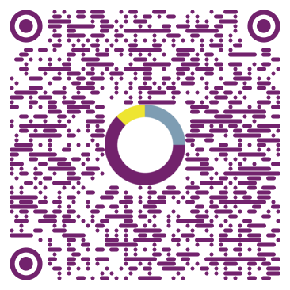
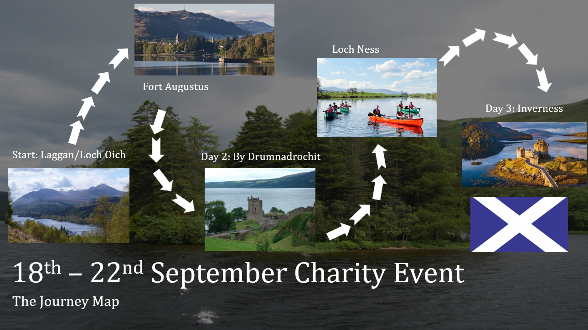

Information
From the 19th to the 21st of September a team of 17 from RSE TCS will be taking on a charity event challenge, consisting of 3 days of canoeing / hiking a 53 mile stretch of the Great Glen Way, from South Laggan to Inverness. Eight people will canoe while eight people walk, with swap over points along the way.
TCS are taking on the challenge in order to raise funds for The Highland Hospice in memory of Heather Dallas and Wakefield Hospice / Croft House Care Home in memory of Sue Hurst, who sadly lost their battle with cancer this year.
Both hospices and the Care home provide services to people, their families and carers who are faced with life shortening illnesses, death and bereavement, to ensure all involved receive the best possible care.
Donations can be made HERE or accessed on this QR code
The path taken
As depicted above, the route begins at Loch Oich in Laggan. The first day concludes at Fort Augustus and continues from the following morning onwards to Drumnadrochit. From there, the hikers and canoers push on to Loch ness and finish at Inverness on the third day.
The team
A team of 17 from RSE Companies: TCS and Amber will be the ones going on the journey. Split into two teams, canoers and walkers, they will alternate activity at the halfway point of each day.